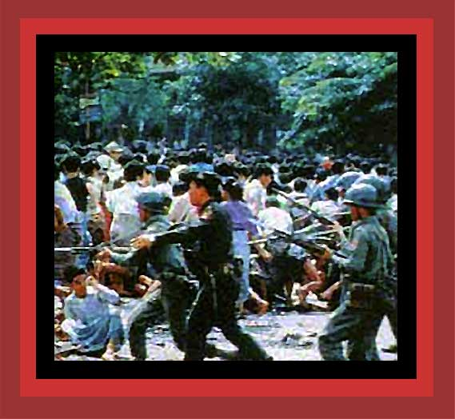

| On August 8, 1988, doctors, students, teachers, farmers, musicians, artists, monks, and workers took part in peaceful, pro-democracy demonstrations in all major cities of Burma. The Burmese military demanded that the demonstrators disperse, and when they would not, soldiers fired round after round into the crowds. They massacred an incredible 5,000 to 10,000 unarmed people simply trying to express their desire for democracy. Here is a photo of the military firing on the demonstrators. On the Burmese military dictatorship, see Chapter 1 of Saving Lives, Enriching Life. Source: unknown. |